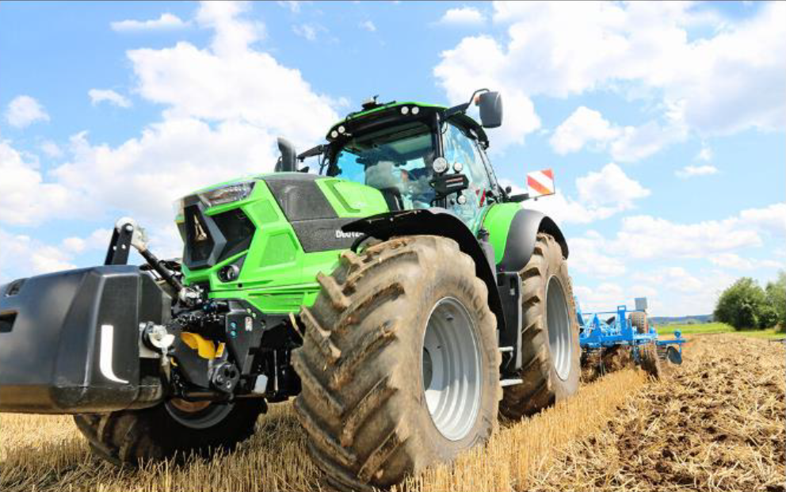

Трактор DEUTZ-FAHR 9

СОЗДАНЫ, ЧТОБЫ УПРОСТИТЬ ВАШУ ЖИЗНЬ. РАЗРАБОТАНЫ ДЛЯ ПОВЫШЕНИЯ ВАШИХ РЕЗУЛЬТАТОВ.
Серия 9, разработанная техническими специалистами DEUTZ-FAHR, представляет собой суперсовременный,
высоко интелектуальный, высокомощный трактор, обеспечивающий и значительно увеличивающий рабочую
эффективность благодаря уникальным характеристикам комфорта, автоматизированным функциям и самым
инновационным технологиям - и все это при минимальных расходах топлива.Все компоненты Серии 9 являются
высоко инновационными и лучшими из представленных на рынке. Серией 9 DEUTZ-FAHR предлагает три
превосходно сбалансированные и крайне привлекательные высокомощные модели трактора, при использовании
которых фермеры и подрядчики могут достичь оптимальных результатов.